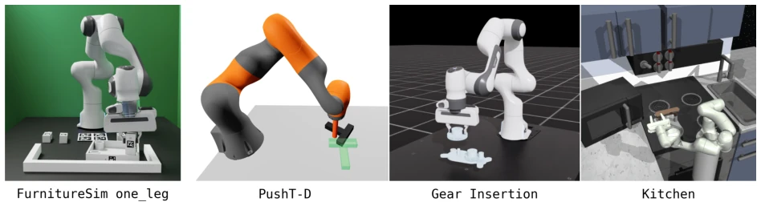
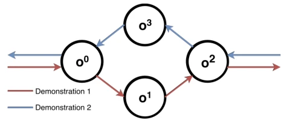
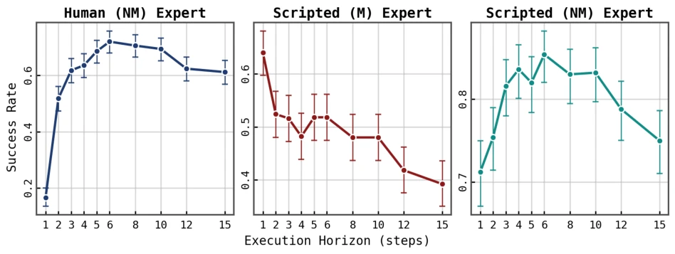
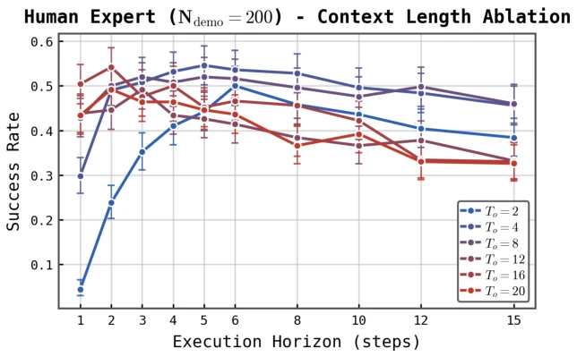
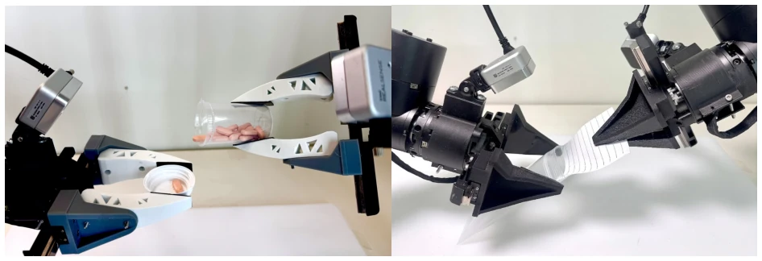
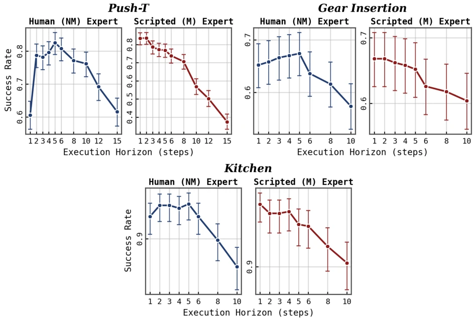
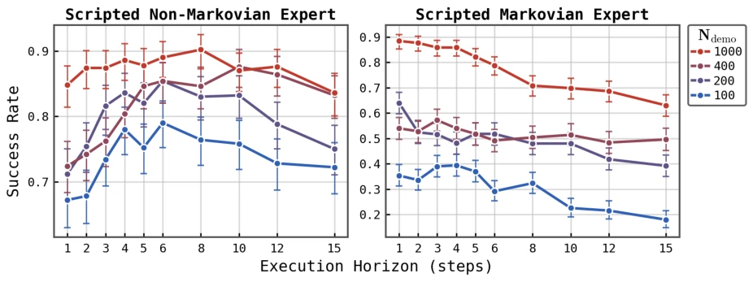
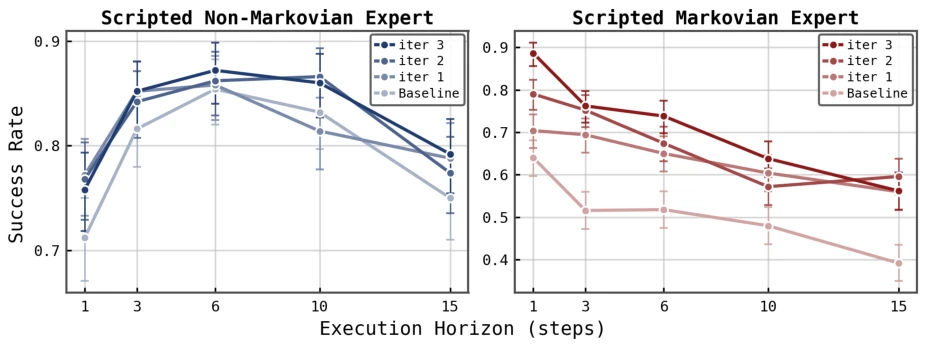
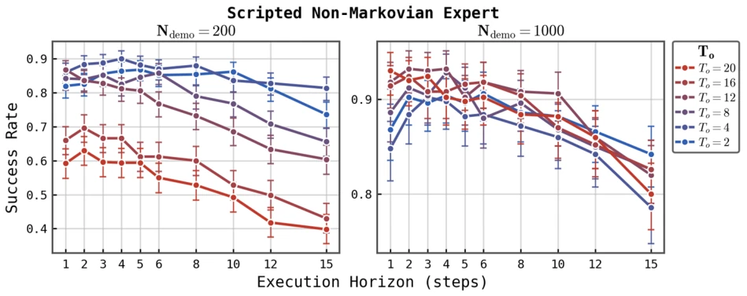
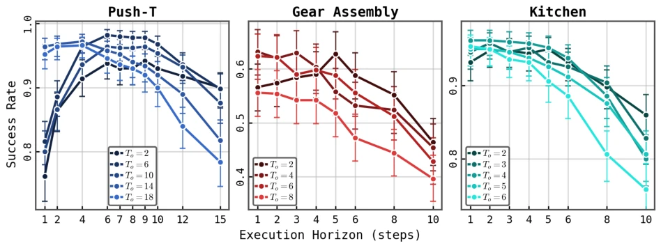

This paper casts a shadow on the "Action Chunking" craze in the imitation learning community. Previously, long open-loop execution was considered standard; the authors directly point out this is actually a "fig leaf" for short-context strategies imitating non-Markovian experts. The core viewpoint is sharp: given sufficient historical context, robots do not need to execute blindly for half a second before reacting; direct reactive control suffices. However, the Diffusion Policy they employ remains conventional, merely adopting a double encoder architecture to stabilize long contexts. The experiments are solid, combining simulation and real-world robots, but the conclusion is somewhat counter-intuitive—previously believed long open-loop resists errors, they claim it resists "non-Markovianity". This paper is suitable for those still struggling with ACT and Diffusion Policy parameters, but long-context training itself demands high data volumes and may not fit all scenarios.
Imitation learning is prevalent in the field of robotic manipulation; SOTA methods like ACT [1] and Diffusion Policy [2] generally adopt long open-loop execution (Action Chunking), i.e., predicting action sequences and executing prefixes. However, long open-loop reduces the reactivity of the policy, which is fatal in dynamic environments. Existing literature often attributes this to mitigating "Compounding Errors" [13], absorbing inference latency, or smoothing actions, but lacks controlled experimental evidence. More critically, mainstream policies only use short contexts (Short Context) of 1-2 frames, causing policies to fail to capture non-Markovian characteristics in human expert demonstrations (such as implicit memory, temporal dependencies). The authors question: Is long open-loop merely a stopgap for short-context strategies imitating non-Markovian experts? If so, can increasing context length allow the policy to return to high-reactivity closed-loop control? This directly relates to whether robots can achieve human-level dexterous manipulation.

Figure 1: Benchmark Tasks. FurnitureSimOneLeg [51]: pick up table leg and insert and screw into table top to assemble the table. Push-T [52]: Push T-shaped slider to target pose, then return robot to reset pose. GearInsertion: Pick up large gear and insert onto gear carrier, meshed with other gears. Kitchen [53]: Complete any 4 kitchen subtasks (e.g., open microwave, move kettle, turn top/bottom knob, flip switch, open slide door, open hinge door), in any order; the dataset contains random subtask permutations. All tasks use image-based observations.
The overall framework is based on Diffusion Policy; core variables are context length (To) and execution horizon (Texec). First, the authors constructed two types of experts: Deterministic Markovian experts (FSM) and experts injected with non-Markovian behavior (such as hidden states, delays). Experiments fixed prediction horizon Tp, scanning Texec to plot success rate - horizon curves. Second, addressing the difficulties of long-context learning, they propose a "Double Encoder" architecture: short-range images are encoded by two encoders, long-range only by the long-range encoder, fused via cross-attention, and paired with short-range encoder Dropout to prevent dependency. This helps the policy distinguish immediate control from historical state inference. Training data volume covers 100 to 1000 demonstrations, ensuring medium to large data regimes. Evaluation metric is task success rate. By comparing different To and Texec combinations, verifying if long context can replace long open-loop. Additionally, HG-DAgger was used to intervene compounding errors, to distinguish the impact of errors versus non-Markovianity.

Figure 12: Illustration of cycling. Two demonstrations jointly induce a cycle in the aggregated dataset. When observing only o0 or o2, a short-context imitator cannot determine whether to continue or exit the cycle, since both actions appear valid in the training data. It may therefore repeatedly switch between the demonstrated trajectories and enter a cycle: o0 →o1 →o2 →o3 →o0. Longer execution horizons reduce the chance of entering such a cycle: a chunk of actions originating at o0 toward o1 and executed open-loop with Texec ≥3 will cross beyond o2, whereas re-planning at o2 can increase the chance of returning to o3 and entering a cycle.
Validated on 4 simulation tasks and 2 real dexterous manipulation tasks. Baseline is Diffusion Policy. Main findings: When the expert is Markovian, optimal execution horizon is Texec=1, success rate monotonically decreases as horizon increases; When the expert is non-Markovian and policy context is short, an inverted U-shaped curve appears, long open-loop is beneficial. Increasing context length (To) significantly pushes the optimal horizon towards Texec=1 or 2, and long context + short open-loop strategies outperform short context + long open-loop under large data volumes. Ablation studies show that increasing data volume (100->1000) and HG-DAgger have limited impact on shortening the optimal horizon, far less than the impact of expert non-Markovianity. In real tasks, To=8, Texec=2 performs best, validating the generalization of the conclusion.

Figure 2: Success-horizon curves for Furniture-Sim one-leg. The policy trained on human non-Markovian (NM) expert data (Left) exhibits the typical inverted U-shape curve; the policy trained on Markovian (M) scripted expert data (Center) exhibits an approximately monotonically decreasing curve; adding non-Markovian behaviors to the scripted expert (Right) restores the inverted U-shape.

Figure 7: Success-horizon curves of policies trained across a range of context lengths for FurnitureSimOneLeg, on 200 human demonstrations. As context length increases, peak performance shifts toward shorter execution hori- zons, with the longest-context policies performing best at execution horizons of 1 or 2.

Figure 10: Real-world SinglePillDispense (Left) and SlipIntoBaggie (Right) tasks. In SinglePillDispense, a successful rollout dumps a single pill out of the bottle onto the cap and then rights the bottle. In SlipIntoBaggie, a successful rollout fully inserts the paper slip into the baggie without crumpling the paper.
其他图片Other Figures

Figure 3: Success-horizon curve with non-Markovian (NM) human vs scripted Markovian (M) expert demon- strations for PushT-M (Top Left), GearInsertion (Top Right), and Kitchen (Bottom) tasks. All exhibit the typical inverted U-shaped curve when trained on human data, but all become monotonically decreasing when trained on Markovian expert data.

Figure 5: Success-horizon curve at dataset sizes ∈{100, 200, 400, 1000} demonstrations, using both Markovian (Right) and non-Markovian (Left) scripted expert data. Only at the lowest data scale (100 demonstrations), we find compounding errors to play a significant role in shaping the curve, causing even the policy trained on Markovian expert data to prefer a long execution horizon. Above 200 demonstrations, we find increasing dataset size only modestly shifts preference toward lower execution horizons.

Figure 6: Success-horizon curves after applying HG-DAgger for Scripted Markovian (Right) and non-Markovian (Left) expert-trained policies. We find no noticeable shift for the non-Markovian expert-trained policy, and a slight shift favoring lower execution horizons for the Markovian expert-trained policy.

Figure 8: Success-horizon curves of policies trained across a range of context lengths for FurnitureSimOneLeg, on 200 and 1000 non-Markovian scripted expert demonstrations. We find increasing dataset size disproportion- ately improves performance of long-context policies at low execution horizons. With 1000 demonstrations, the highest performing policies use long context length To of 12 – 20 and short execution horizon Texec < 4 and achieve 93.2% success, outperforming the best short-context (To = 2) policy at Texec = 6 with 90.6% success.

Figure 9: Success-horizon curves of policies trained across a range of context lengths for PushT-D, GearInsertion, and Kitchen on human demonstrations. Dataset sizes are 160 demonstrations for PushT-D, 200 for GearInsertion, and 581 for Kitchen. With sufficiently long context length, Texec = 1 becomes optimal or near-optimal in all tasks.